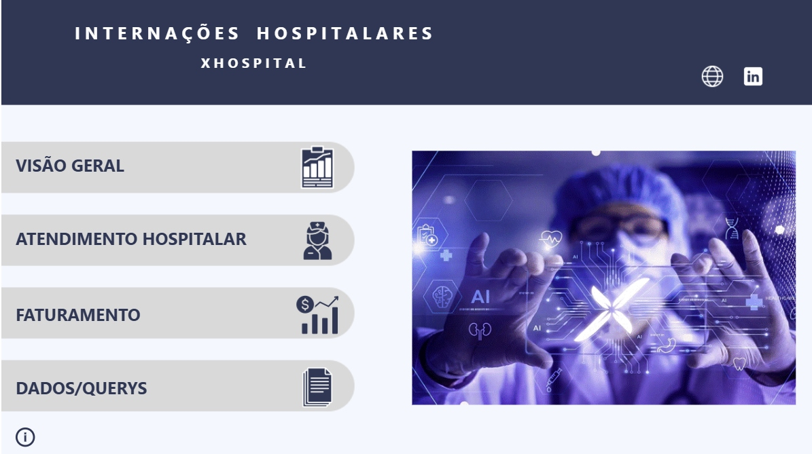

Dashboard de Recursos Humanos
HR Analytics
Power BI
People Analytics
Visão de headcount, contratações, demissões, massa salarial, más contratações e indicadores de turnover.
Abrir DashboardEngenheiro de dados com 13+ anos de experiência em infraestrutura de TI na saúde, orquestração de dados e arquiteturas modernas. Foco em transformar dados em insights acionáveis.
Profissional de TI com mais de 13 anos de experiência em ambientes hospitalares, atuando em infraestrutura, Business Intelligence e engenharia de dados. Trabalho em projetos de alta complexidade envolvendo integração de dados de saúde, governança e automação.
Atuo com arquiteturas modernas de dados, ETL/ELT, modelagem dimensional, dashboards analíticos e pipelines escaláveis em nuvem. Meu foco é entregar soluções robustas, bem documentadas e alinhadas às necessidades do negócio.
Projeto de Data Warehouse usando dbt Core no dataset Northwind, seguindo padrões modernos de modelagem.
Ver repositório →Workshop prático sobre agentes de IA e uso de LLMs em cenários reais.
Ver repositório →Teste técnico em Python com foco em manipulação de dados, automação e boas práticas.
Ver repositório →
Visão de headcount, contratações, demissões, massa salarial, más contratações e indicadores de turnover.
Abrir Dashboard
Painel executivo com faturamento, margens, notas emitidas, top vendedores e decomposição de resultados.
Abrir Dashboard
Análises de rodovias mais perigosas, causas de acidentes, vítimas, veículos e mapas de calor das ocorrências.
Abrir Dashboard
Overview de admissões, saídas, permanência média, mortalidade, receita e projeções de receita anual.
Abrir Dashboard